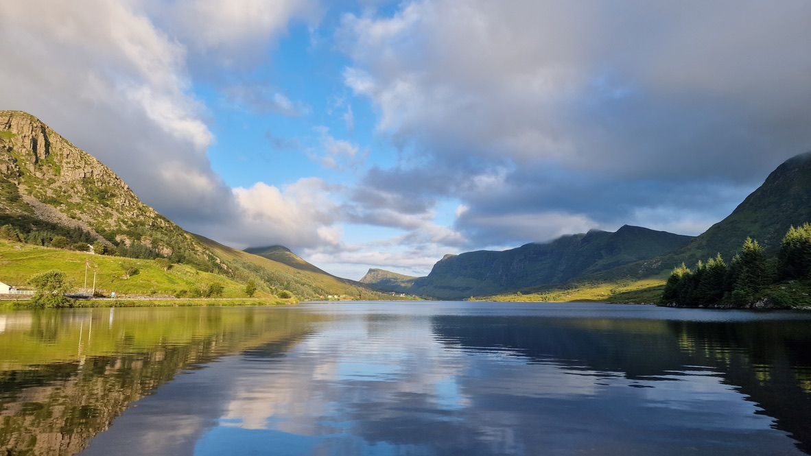
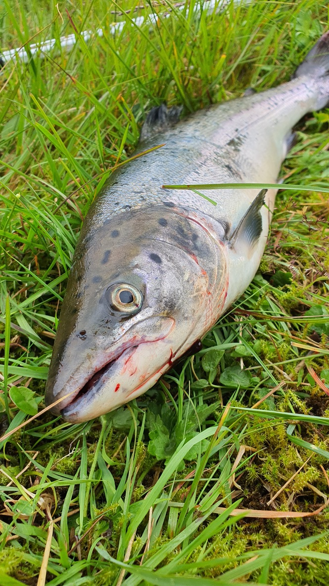
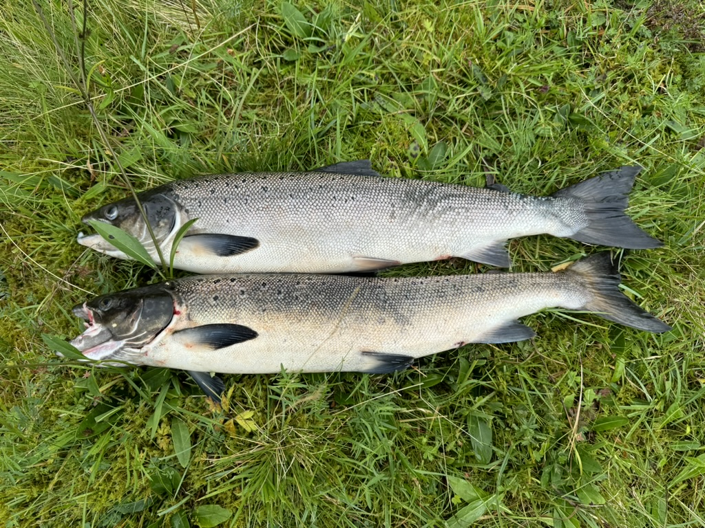
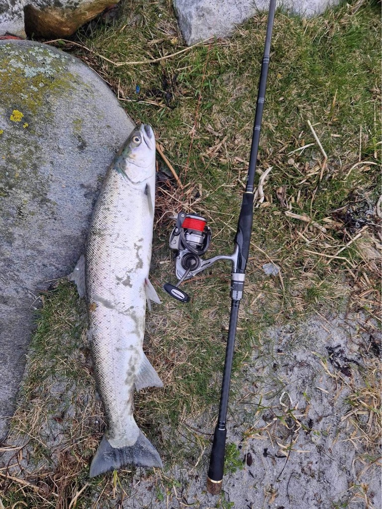

Stadlandet · Vestland
Morkadalen
Vilt og Fiskelag
Opplev godt fiske i vakker natur, med gode sjansar for laks og plass til både familiar og erfarne fiskarar.
Scroll
Stadlandet · Vestland
Opplev godt fiske i vakker natur, med gode sjansar for laks og plass til både familiar og erfarne fiskarar.





Morkadalen er eit naturskjønt område på Stadlandet, kjent for gode fiskemoglegheiter og lange tradisjonar. Her finn du ein solid bestand av både laks og aure, med fleire gode og lett tilgjengelege fiskeplassar, både i elva og i vatna.
Gjennom generasjonar har folk fiska i Morkadalen, og laksefiske har vore ein viktig del av friluftslivet i området. Dette er ein stad der tradisjon møter natur, og der både erfarne fiskarar og nybegynnarar kan få gode opplevingar.
Fiskekort
Alle fiskekort gjev tilgang til fiskevatna i Morkadalen. Vel kortet som passar deg.
Betaling
Betal enkelt med Vipps, eller kjøp over disk hos Joker Stadlandet.
Skann for å betale i nettbutikken
Vipps-betalinga er fiskekortet ditt.
Fiskesoner
Utforsk fiskevatna i Morkadalen. Klikk på kartet for detaljar om kvar enkelt sone.
Retningslinjer
For å ta vare på naturen og fiskebestandane ber vi alle fiskarar følgja desse reglane.